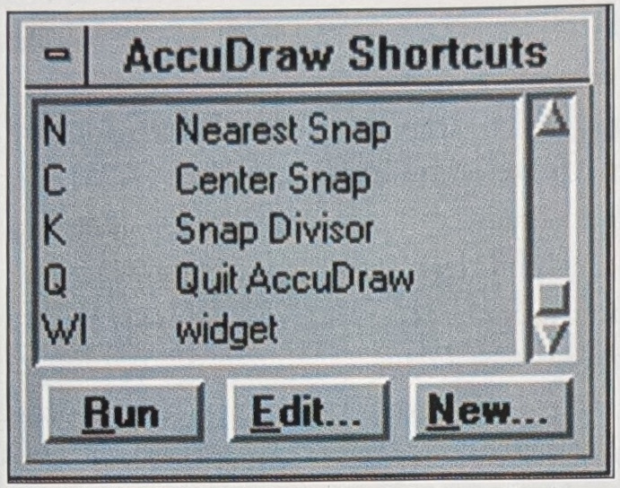
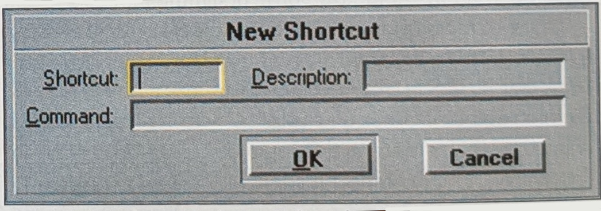

Figure 4: The Shortcut Key-ins box displays AccuDraw's available shortcuts.
the compass; Angle controls angles from the compass x and y.
Coordinate System is the second portion of the box. Rotation performs the same function as the T, S, F and other shortcuts discussed earlier. Type switches the compass from rectangular to polar, just as the spacebar shortcut does. If there is a lot of screen space and you do not like shortcuts, these are useful.
Under Operation we encounter some interesting features. The Floating Origin option (on by default) controls whether AccuDraw moves the compass with each data point. It is helpful to turn Floating Origin off if a number of points relative to the same origin point must be entered. The Move Origin shortcut (O) will override this feature.
The Display portion changes the way some of AccuDraw is displayed and contains the Shortcut feature. The red x and green y compass colors can be altered if you wish. Coordinate Readout activates the MicroStation Coordinate Readout box. Nothing different here—standard MicroStation options.
The real customization capabilities lie in the Shortcut Key-ins option. This window displays all existing shortcuts and allows editing or creation of new shortcuts (see Figure 4). Just a hint:
There is even a shortcut to the shortcuts—the ? key. I would not recommend editing existing shortcuts, out of courtesy to those who might use MicroStation after you.
But as far as creating new shortcuts, there can never be too many—provided they are used! Creating a new shortcut is a simple process (see Figure 5). Active the New Shortcut window from the Shortcut Key-ins window. Enter the shortcut keyin (the shorter the better). Give a description of the shortcut. The last step is to enter the command. If you do not know the exact syntax of the command you wish to use, MicroStation's online help provides the syntax for each command. Almost anything can be assigned as a shortcut, even macros and MDL routines.

Figure 5: Creating new shortcuts is a simple process, as shown here.
Like every MicroStation-related product, Bentley is actively updating AccuDraw, including revisions in new versions of the software. For Bentley SELECT customers, however, these updates are more frequent—available on the quarterly Vault CD-ROMs that are part of the SELECT program.
AccuDraw represents a new drafting philosophy. The tool will continue to mature. Allow AccuDraw to become a tool you depend on!